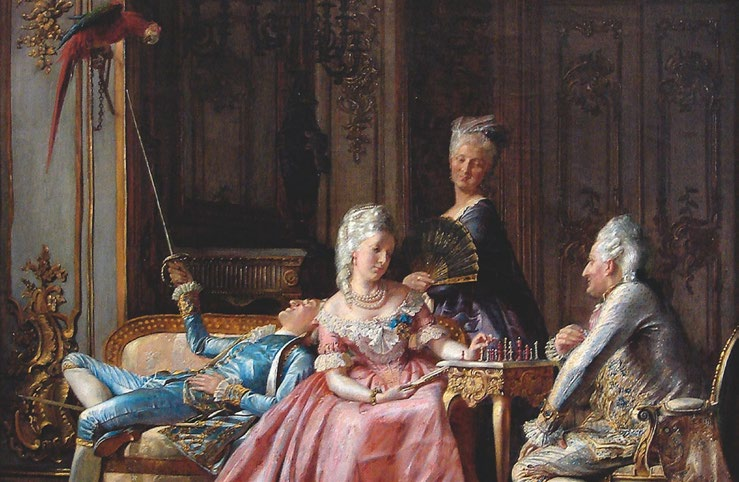
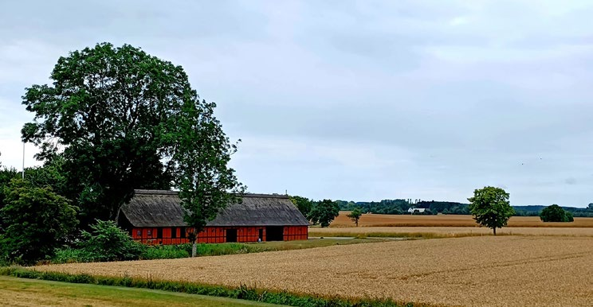
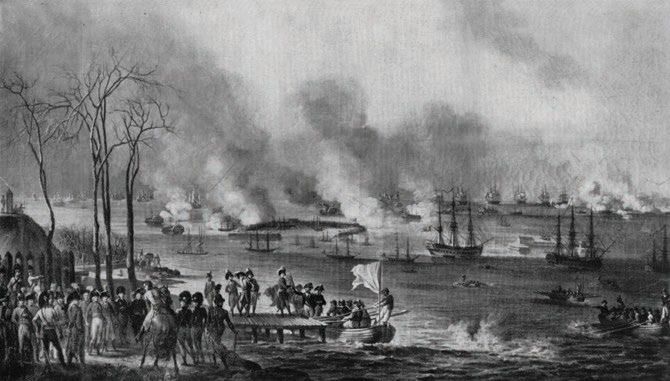
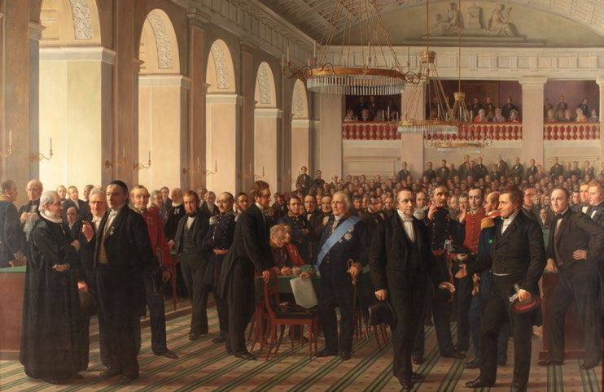

1.6 – OPLYSNINGSTID OG VEJEN TIL DEMOKRATI (ca. 1700-1849)
sidde 19
VEJEN TIL DEMOKRATI (ca. 1700-1849)
Oplysningstiden i 1700-tallets Europa var en tid, der var præget af store forandringer. Oplysningstiden byggede på den opfat telse, at befolkningen gennem oplysning, tolerance og kritisk tænkning kunne blive friere og bedre mennesker. Fornuften skulle føre til frihed for den enkelte. Sådanne tanker nåede også til Danmark. Det voksende borgerskab i byerne krævede at få del i magten og begyndte at angribe enevælden.
STAVNSBÅND OG LANDBOREFORMERNE
I første halvdel af 1700-tallet var der økonomisk krise i landbruget i Danmark. For at sikre stabil arbejdskraft på godserne indførte kongen stavns båndet i 1733. Stavnsbåndet indebar, at alle bønder, som udgjorde størstedelen af befolkningen, skulle blive på det gods, hvor de var født, indtil de var 40 år. Godsejerne var dermed sikret arbejdskraft. Til gengæld skulle godsejerne stille nogle af deres bønder som soldater til hæren. De fleste bønder i Danmark var på den tid fæstebønder. Det vil sige, at de boede på en af godsejerens mindre gårde. Fæstebønderne skulle både betale afgift til gods ejeren og udføre gratis arbejde på godsejerens jord for at øge produktionen på godserne.
Mod slutningen af 1700-tallet begyndte oplys ningstidens ideer så småt at slå igennem i Danmark.
Kongen, Christian 7. (1766-1808), led af skizo freni og var derfor helt uegnet til at regere. Den tyske læge Johann Friedrich Struensee (173772) vandt kongens tillid og blev ansat som hans personlige læge. I årene 1770-72 fik han stor magt, fordi kongen lod ham regere for sig. Frihedsstøtten i København, der markerer stavnsbåndets ophævelse i 1788.
Frihedsstøtten i København, der markerer stavnsbåndets ophævelse i 1788.
Læremateriale Til Indfødsretsprøven
sidde 20
Struensee udstedte et stort antal love på kongens vegne. Blandt andet indførte han høj grad af trykkefrihed, afskaffede brugen af tortur for at få mistænkte til at tilstå en forbrydelse. Endelig begrænsede han bøndernes pligt til at arbejde for den lokale herremand.
På mange måder var Struensee foran sin tid i sit forsøg på at modernisere Danmark med udgangspunkt i oplysningstidens tanker. Men han endte med at blive arresteret og henrettet, fordi de gamle magthavere – ministre, embeds mænd, adel og flere fra den øvrige kongelige familie – ikke kunne lide hans reformer. Desuden havde han i øvrigt en kærlighedsaffære med Christian 7.'s dronning, Caroline Mathilde (1751-75), og sammen fik de et barn. Struensees styre varede dermed kun kort, og de fleste af hans reformer blev ophævet igen. Alligevel skulle mange af både hans reformer og oplysningstidens ideer allerede fra 1780'erne igen få betydning for det danske samfund.Liggende på sofaen kong Christian 7. Ved bordet dronning Caroline Mathilde sa
Liggende på sofaen kong Christian 7. Ved bordet dronning Caroline Mathilde samt kongens livslæge Johann Friedrich Struensee. Maleri af Kristian Zahrtmann.
Der blev blandt andet gennemført en række reformer af landbruget og af forhol dene for landbefolkningen. Landboreformerne, som har spillet en stor rolle i udviklingen af både det danske landbrug og det danske samfund, medførte, at landbruget i løbet af 1800-tallet udviklede sig fra et middelalderligt system med fæstebønder til et mere moderne landbrug med selvejende bønder.
Fra 1788 blev stavnsbåndet ophævet. Ophævelsen betød, at fæstebønder selv kunne vælge, om de ville blive boende på det gods, de havde hørt til. Eller om de ville flytte væk derfra. Et vigtigt resultat af reformerne var også, at bønderne fik mulighed for selv at eje jord. Godsejerne solgte nemlig i mange tilfælde jorden til de bønder, som hidtil havde lejet den. Man fordelte i mange tilfælde også lands byens fælles jord mellem de enkelte gårde. På den måde fik den enkelte bonde samlet sine marker på ét sted, så jorden kunne dyrkes mere effektivt.
Læremateriale Til Indfødsretsprøven

sidde 21
Tidligere lå bøndernes gårde samlet i en landsby. I forbindelse med landboreformerne blev mange gårde flyttet ud fra landsbyen til bondens egen jord. Denne udflytning præger stadig det danske landskab - her på Bornholm. Foto: Tue Schou Pedersen.
Tidligere lå bøndernes gårde samlet i en landsby. I forbindelse med landbo reformerne blev mange gårde flyttet ud fra landsbyen til bondens egen jord. Denne udflytning præger stadig det danske landskab, idet gårdene ligger spredt i landskabet som her på Bornholm. Foto: Tue Schou Pedersen.
Tidligere lå bøndernes gårde og marker samlet i en landsby. Nu blev mange gårde flyttet ud fra landsbyerne til et stykke jord, som bonden selv kom til at eje. Denne udflytning af gårdene præger stadig det danske landskab.
Landboreformerne skabte en stor gruppe af landmænd med mellemstore gårde – en såkaldte gårdmands-klasse. I Danmark var der forholdsvis flere landbru gere i gårdmandsklassen end i mange andre europæiske lande, hvor nogle få storbønder i form af herremændene ejede det meste af jorden.
Selv om landboreformerne skabte en stor klasse af gårdmænd, var livet på landet dog stadig hårdt for flertallet. Der var ikke jord nok, og jorden var ulige fordelt. Og derfor var det kun et mindretal af bønder, der havde et landbrug, de kunne leve af. Og en voldsom vækst i befolkningstallet gennem 1800-tallet betød, at flere og flere ikke kunne få deres egen jord. Dermed voksede underklassen på landet ved, at de såkaldte husmænd blev flere. De boede typisk i mindre huse og havde kun små eller ingen stykker jord at dyrke eller holde husdyr på. Derfor arbejdede de oftest som landarbejdere på nærliggende gårde eller godser. Mange flyttede ind til byerne for at søge arbejde, og en del emigrerede til Amerika.
DEN FLORISSANTE PERIODE OG ENGLANDSKRIGE
I sidste fjerdedel af 1700-tallet blomstrede dansk søfart, og København udvik lede sig til en international storhavn. Perioden kaldes Den Florissante Periode (’florissant’ betyder ’blomstrende’). Gennem det meste af 1700-tallet var der fred i Danmark, der holdt sig neutral i krigene. Omvendt blev blandt andet Storbritan niens, Frankrigs og Nederlandenes flåder anvendt til krig. Samtidig blokerede disse stormagter hinandens havne og sejlruter. De sendte derfor i stort omfang
Læremateriale Til Indfødsretsprøven

sidde 22
deres varer ombord på neutrale danske skibe, som kunne komme frem de fleste steder. Skibene sejlede værdifulde laster til København, hvor de blev videresolgt til andre europæiske lande.
Denne neutralitetshandel bragte således i første omgang store indtægter til landet, men på lidt længere sigt blev samme handel også vejen ind i Napoleonskrigene, hvilket havde katastrofale konsekvenser. I Danmark bliver disse krige også kaldt Englandskrigene, fordi Danmark blev allieret med Frankrig i krig mod England (Storbritannien). Krigene begyndte i 1792 som følge af Den Franske Revolution i 1789.
I krigenes første tid var Danmark neutral og tjente med sin store handelsflåde godt på at sejle varer til både Storbritannien og Frankrig. Handelsflåden blev beskyttet af Danmarks egen krigsflåde, og det var Storbritannien utilfreds med, fordi de ikke ønskede, at Danmark handlede med Frankrig. Derfor angreb og besejrede den britiske flåde den danske flåde i 1801. Slaget kaldes Slaget på Reden, fordi det fandt sted i farvandet lige uden for Københavns havn i det område, der kaldes Københavns Red.
I 1807 ville den franske kejser Napoleon den 1. føre økonomisk krig mod Stor britannien ved at blokere handelsruterne til og fra Storbritannien med krigs skibe. For at forhindre Napoleon i at bruge de danske skibe i blokaden, valgte briterne at erobre hele den danske flåde og bombarderede i den forbindelse København. Begivenheden kaldes Københavns Bombardement. Efter nederlaget blev Danmark tvunget til at vælge side og valgte Frankrig.
Napoleonskrigene endte med, at Danmarks allierede, Frankrig, tabte til de øvrige europæiske stormagter. Det betød, at Danmark ved en fredsaftale i 1814 måtte afgive Norge til Sverige. Over 400 års dansk-norsk union (siden 1380) var dermed bragt til ende.Slaget på Reden 2. april 180
Slaget på Reden 2. april 1801.
Læremateriale Til Indfødsretsprøven

sidde 23
VEJEN TIL EN FRI GRUNDLOV
I 1800-tallet blev Danmark påvirket af de folkelige og demokratiske strøm ninger, som blandt andet udsprang af Den Franske Revolution i 1789. I 1848 udbrød der revolution i mange europæiske hovedstæder. Der blev ikke revolu tion i Danmark, men uroen rundt om i Europa påvirkede landet. Borgerskabet i København krævede i marts 1848, at kong Frederik 7. (1848-63) skulle indføre en fri forfatning. Presset af den ophidsede folkestemning valgte kongen at følge kravet.
Han ophævede den enevældige statsform og erklærede sig som konstitutionel konge. Det vil sige, at han skulle regere i samarbejde med folket på baggrund af konstitutionen (grundloven). Den 5. juni 1849 underskrev Frederik 7. Danmarks første frie forfatning, Danmarks Riges Grundlov.
Med grundloven fik Danmark et parlament med to lovgivende forsamlinger, Folketinget og Landstinget, der samlet blev kaldt Rigsdagen. Efter næsten 200 år (siden 1660-61) under enevældige konger fik en del af den danske befolkning nu direkte indflydelse på lovgivningen. Mænd over 30 år med egen husstand (dvs. som enten ejer eller lejer deres egen bolig) kunne vælge medlemmer til Rigs dagen. For at kunne blive valgt til Folketinget skulle man være fyldt 25 år, mens medlemmer af Landstinget skulle være fyldt 40 år og have en høj indkomst. Hverken kvinder eller fattige havde valgret, det vil sige retten til at stemme, eller kunne vælges til Rigsdagens to instanser. Alt i alt medførte Grundloven, at cirka 15 procent af befolkningen over 30 år havde valgret. Ikke desto mindre var grundloven meget demokratisk og liberal sammenlignet med de fleste andre staters forfatninger på den tid.Den Grundlovsgivende Rigsforsamling 1848-49. Maleri af Constantin Ha
Den Grundlovsgivende Rigsforsamling 1848-49. Maleri af Constantin Hansen (1860-64).
Læremateriale Til Indfødsretsprøven

Fonte: Læremateriale til Indfødsretsprøven, SIRI.